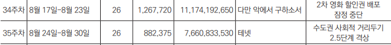
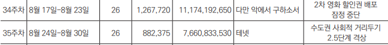

관객수, 매출액 급격히 떨어지거나 올랐을 때 일어난 상황 정리
위 차트를 보면 코로나 시작 후 20.01~02, 08~09, 11~12 사이에 관객수가 급격히 떨어진 것을 알 수 있다
그 당시 일어난 이슈들을 정리 해 봤다


이 자료들은 매 달 15일마다 업데이트 합니다.
위 차트를 보면 코로나 시작 후 20.01~02, 08~09, 11~12 사이에 관객수가 급격히 떨어진 것을 알 수 있다
그 당시 일어난 이슈들을 정리 해 봤다
